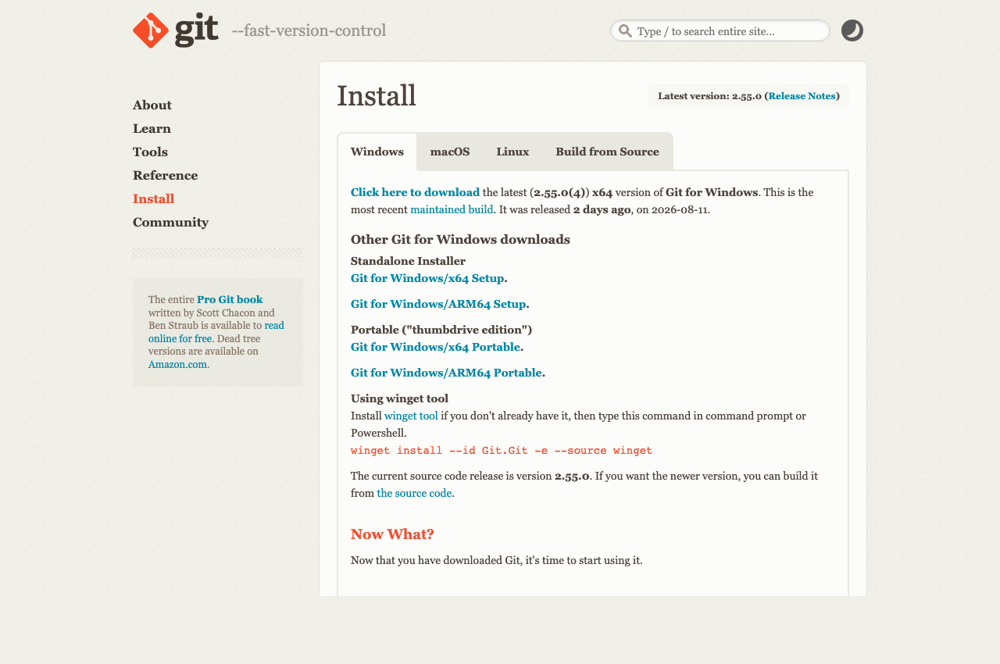

שני דברים להתקין לפני המפגש, כדי שנוכל להעלות לאוויר את האתר שתקים ותצא עם כתובת אמיתית.
uri-shchori.github.io
cmd ולחץ Enter. ייפתח חלון שחור.git --versiongit version 2.55.0'git' is not recognized
git --version לעבוד בחלון השחור. אם תבחר את הראשונה, השלב הבא לא יעבוד.
cmd, Enter), והרץ שוב git --version. חלון שכבר היה פתוח לא מזהה תוכנה שהותקנה אחריו. אם גם עכשיו זה לא עובד, עשה ריסטארט למחשב וזה ייפתר.
git config --global user.name "Uri Shchori"git config --global user.email "your-email@gmail.com"git config --global --listuser.name=Uri Shchori ו־user.email=… עם המייל שלך.
git --version מחזירה מספר גרסהזה כל מה שצריך לפני המפגש. את כל השאר נעשה ביחד, ואתה יוצא עם כתובת חיה.